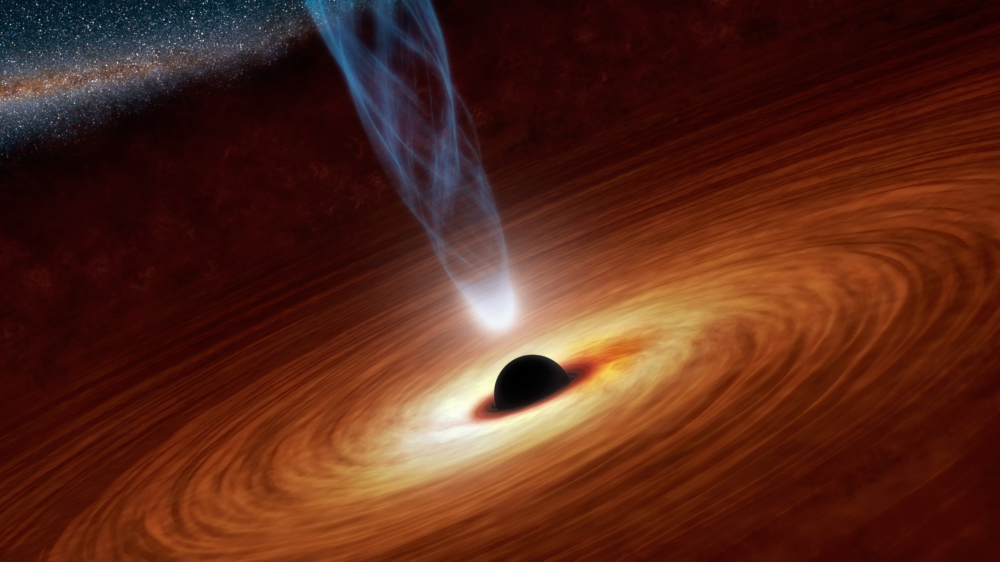

Чёрная дыра
Чёрная дыра — область пространства-времени, гравитационное притяжение которой настолько велико, что покинуть её не могут даже объекты, движущиеся со скоростью света, в том числе кванты самого света. Граница этой области называется горизонтом событий. В простейшем случае сферически симметричной чёрной дыры он представляет собой сферу с радиусом Шварцшильда, который считается характерным размером чёрной дыры.
Теоретически возможность существования таких областей пространства-времени следует из некоторых точных решений уравнений Эйнштейна, первое из которых было получено Карлом Шварцшильдом в 1915 году. Изобретатель термина достоверно не известен, но само обозначение было популяризовано Джоном Арчибальдом Уилером и впервые публично употреблено в популярной лекции «Наша Вселенная: известное и неизвестное» (англ. Our Universe: the Known and Unknown) 29 декабря 1967 года. Ранее подобные астрофизические объекты называли «сколлапсировавшие звёзды» или «коллапсары» (от англ. collapsed stars), а также «застывшие звёзды» (англ. frozen stars).
Искривление пространства
(Псевдо)римановыми называются пространства, которые в малых масштабах ведут себя «почти» как обычные (псевдо)евклидовы. Так, на небольших участках сферы теорема Пифагора и другие факты евклидовой геометрии выполняются с очень большой точностью. В своё время это обстоятельство и позволило построить евклидову геометрию на основе наблюдений над поверхностью Земли (которая в действительности не является плоской, а близка к сферической). Это же обстоятельство обусловило и выбор именно псевдоримановых (а не каких-либо ещё) пространств в качестве основного объекта рассмотрения в ОТО: свойства небольших участков пространства-времени не должны сильно отличаться от известных из СТО.
Однако в больших масштабах римановы пространства могут сильно отличаться от евклидовых. Одной из основных характеристик такого отличия является понятие кривизны. Суть его состоит в следующем: евклидовы пространства обладают свойством абсолютного параллелизма: вектор получаемый в результате параллельного перенесения вектора вдоль любого замкнутого пути, совпадает с исходным вектором Для римановых пространств это уже не всегда так, что может быть легко показано на следующем примере. Предположим, что наблюдатель встал на пересечении экватора с нулевым меридианом лицом на восток и начал двигаться вдоль экватора. Дойдя до точки с долготой 180°, он изменил направление движения и начал двигаться по меридиану к северу, не меняя направления взгляда (то есть теперь он смотрит вправо по ходу). Когда он таким образом перейдёт через северный полюс и вернётся в исходную точку, то окажется, что он стоит лицом к западу (а не к востоку, как изначально). Иначе говоря, вектор, параллельно перенесённый вдоль маршрута следования наблюдателя, «прокрутился» относительно исходного вектора. Характеристикой величины такого «прокручивания» и является кривизна.
Чёрные дыры во Вселенной
Со времени теоретического предсказания чёрных дыр оставался открытым вопрос об их существовании, так как наличие решения типа «чёрная дыра» ещё не гарантирует, что существуют механизмы образования подобных объектов во Вселенной. С математической точки зрения известно, что как минимум коллапс гравитационных волн в общей теории относительности устойчиво ведёт к формированию ловушечных поверхностей, а следовательно, и чёрной дыры, как доказано Деметриосом Кристодулу в 2000-х годах (Премия Шао за 2011 год).
С физической точки зрения известны механизмы, которые могут приводить к тому, что некоторая область пространства-времени будет иметь те же свойства (ту же геометрию), что и соответствующая область у чёрной дыры. Так, например, в результате коллапса звезды может сформироваться пространство-время, показанное на рисунке.
Чёрные дыры звёздных масс
Чёрные дыры звёздных масс образуются как конечный этап жизни звезды, после полного выгорания термоядерного топлива и прекращения реакции звезда теоретически должна начать остывать, что приведёт к уменьшению внутреннего давления и сжатию звезды под действием гравитации. Сжатие может остановиться на определённом этапе, а может перейти в стремительный гравитационный коллапс. В зависимости от массы звезды и вращательного момента возможны следующие конечные состояния:
- Погасшая очень плотная звезда, состоящая в основном, в зависимости от массы, из гелия, углерода, кислорода, неона, магния, кремния или железа (основные элементы перечислены в порядке возрастания массы остатка звезды). Такие остатки называют белыми карликами, масса их ограничивается сверху пределом Чандрасекара — около 1,4 солнечной массы.
- Нейтронная звезда, масса которой ограничена пределом Оппенгеймера — Волкова — 2—3 солнечные массы.
- Чёрная дыра.
По мере увеличения массы остатка звезды происходит движение равновесной конфигурации вниз по изложенной последовательности. Вращательный момент увеличивает предельные массы на каждой ступени, но не качественно, а количественно (максимум в 2—3 раза).
Условия (главным образом, масса), при которых конечным состоянием эволюции звезды является чёрная дыра, изучены недостаточно хорошо, так как для этого необходимо знать поведение и состояния вещества при чрезвычайно высоких плотностях, недоступных экспериментальному изучению. Дополнительные сложности представляет моделирование звёзд на поздних этапах их эволюции из-за сложности возникающего химического состава и резкого уменьшения характерного времени протекания процессов. Достаточно упомянуть, что часть крупнейших космических катастроф, вспышки сверхновых, возникает именно на этих этапах эволюции звёзд. Различные модели дают нижнюю оценку массы чёрной дыры, получающейся в результате гравитационного коллапса, от 2,5 до 5,6 массы Солнца. Характерный размер чёрной дыры при этом очень мал — до нескольких десятков километров.
Впоследствии чёрная дыра может разрастись за счёт поглощения вещества — как правило, это газ соседней звезды в двойных звёздных системах (столкновение чёрной дыры с любым другим астрономическим объектом очень маловероятно из-за её малого диаметра). Процесс падения газа на любой компактный астрофизический объект, в том числе и на чёрную дыру, называется аккрецией. При этом из-за вращения газа формируется аккреционный диск, в котором вещество разгоняется до релятивистских скоростей, нагревается и в результате сильно излучает, в том числе и в рентгеновском диапазоне, что даёт принципиальную возможность обнаруживать такие аккреционные диски (и, следовательно, чёрные дыры) при помощи ультрафиолетовых и рентгеновских телескопов. Основной проблемой является малая величина и трудность регистрации отличий аккреционных дисков нейтронных звёзд и чёрных дыр, что приводит к неуверенности в идентификации астрономических объектов как чёрных дыр. Основное отличие состоит в том, что газ, падающий на все объекты, рано или поздно встречает твёрдую поверхность, что приводит к интенсивному излучению при торможении, но облако газа, падающее на чёрную дыру, из-за неограниченно растущего гравитационного замедления времени (красного смещения) просто быстро меркнет при приближении к горизонту событий, что наблюдалось телескопом Хаббла в случае источника Лебедь X-1.
{kind=link}
{kind=link}
{kind=link}